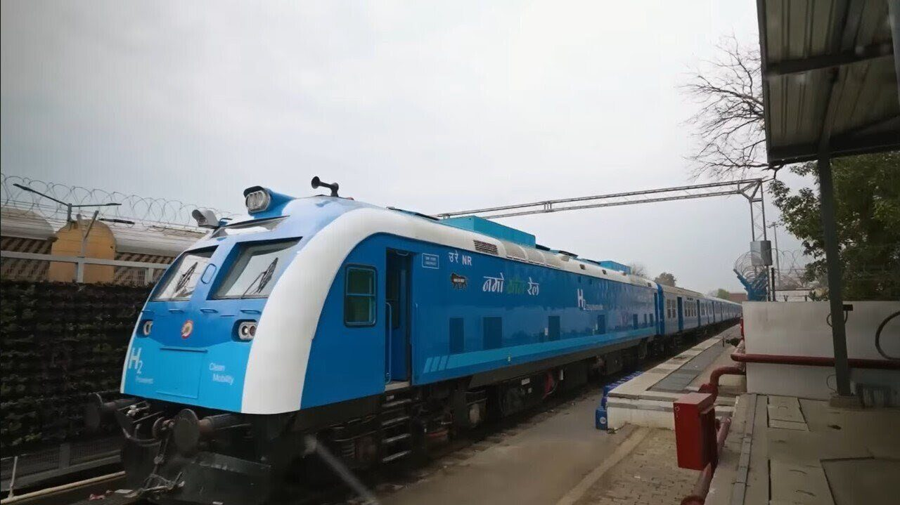
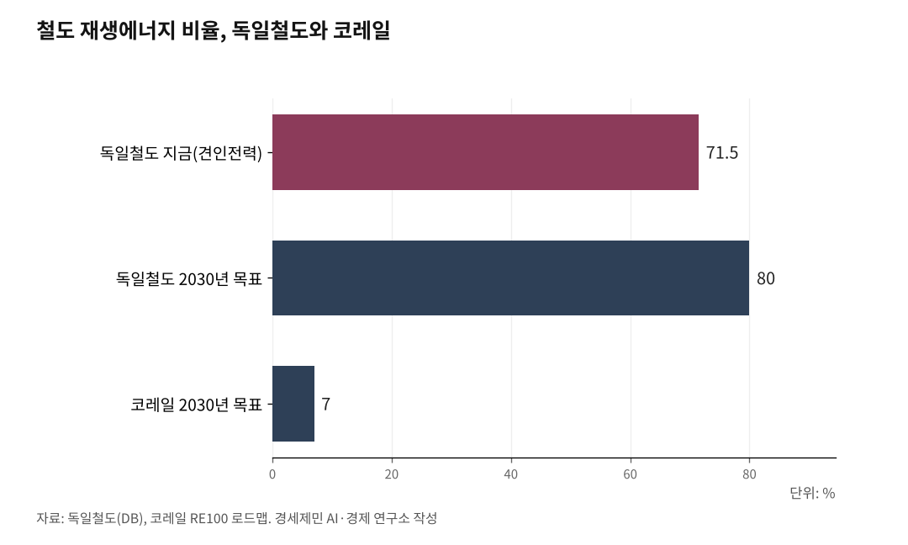

[127년 한국철도⑮] 역사 지붕엔 태양광, 열차엔 수소… 녹색철도, 셈으로 완성한다
코레일 2050년 재생에너지 100%, 태양광 384.6MW 청사진
자가발전 넘어 조달·저장으로… 독일철도는 조달 늘려 이미 71.5%
수소트램 기술은 완성, 남은 건 연료 경제성과 제도
AI경세제민=김갑봉 기자 | 인하대 해양AI융합센터 김갑봉 연구교수(물류학)│철도는 승용차보다 훨씬 적은 탄소를 뿜는다. 그러나 그 철도가 쓰는 전기는 아직 상당 부분 석탄과 가스에서 나온다. 그래서 코레일은 역사 지붕에 태양광을 얹고 전선 없는 구간에 수소트램을 넣겠다는 청사진을 내놨다. 방향은 옳고, 첫걸음도 뗐다. 남은 관건은 눈에 띄는 자가발전을 넘어, 밖에서 재생에너지를 사 오는 조달과 수소의 값을 푸는 제도다.

코레일의 녹색철도 청사진
코레일은 2026년 초 RE100 추진단을 꾸리고, 쓰는 전기의 재생에너지 비율을 2030년 7%, 2040년 34%, 2050년 100%로 끌어올리는 로드맵을 확정했다. 역사와 차량기지 지붕, 방음벽, 선로 옆 빈 땅에 태양광을 얹어 2050년까지 384.6메가와트(MW)를 깐다. 전남 순천에는 이미 양면형 태양광 방음벽이 섰다. 전선이 없는 구간에는 수소트램을 넣어, 대전은 2호선에 34편성, 울산은 1호선에 9편성을 굴린다.
청사진은 야심차다. 이를 뒷받침할 관건은 세 가지다. 태양광의 셈과 독일의 경험, 그리고 수소의 값을 차례로 짚어 본다.

자가발전을 넘어, 조달이 관건
먼저 태양광의 셈이다. 설비용량은 실제 발전량이 아니다. 태양광은 해가 떠 있는 낮에만, 그마저 날씨에 따라 만든다. 한국 태양광의 설비이용률은 15% 안팎, 연간 1300시간 남짓이다. 384.6MW를 다 세워도 한 해 만드는 전기는 500기가와트시(GWh)를 겨우 넘는다.
코레일은 한 해 3217GWh를 쓴다. 자가 태양광이 대는 몫은 그 6분의 1이다. 나머지는 밖에서 사 오거나 다른 재생원으로 채워야 한다. 자가발전은 출발점이고, 재생에너지 100%로 가는 길은 조달에서 갈린다.
재생에너지는 만드는 값이 싸도 끊기는 것을 메우는 비용이 따른다. 낮에 남는 전기를 밤에 쓰는 저장장치, 흐린 날을 받치는 백업, 그 전기를 실어 나르는 전력망이 그 값이다. 지붕에 판을 까는 일보다, 그 판을 잇고 저장하고 사 오는 일이 재생에너지 전환의 실질이다.
독일이 71.5%에 이른 길
앞서간 독일이 참고가 된다. 독일철도(DB)는 열차를 굴리는 견인전력의 71.5%를 이미 재생에너지로 대고, 2030년 80%, 2038년 100%를 목표로 한다. 그 비율은 풍력·수력에 태양광을 더한 것으로, 힘은 자가발전만이 아니라 대규모 조달에서 나왔다. 독일철도는 태양광단지와 2.5테라와트시(TWh) 규모의 장기 전력구매계약(PPA)을 맺어 전기를 사 온다.
코레일의 목표는 2030년 7%, 2050년 100%다. 독일보다 완만하지만 방향은 같다. 독일이 보여준 길이 그것이다. 재생에너지 전환은 자가발전만으로는 어렵고, 조달이 함께 가야 한다.
수소열차에서도 독일이 앞서 갔다. 2022년 니더작센에서 세계 처음으로 수소열차를 정규 운행에 넣어 디젤 열차를 대체했다. 한국의 수소철도는 이제 도시 트램으로 첫발을 뗀다.
수소트램, 남은 과제는 연료 경제성
수소트램은 기술로는 이미 완성됐다. 남은 과제는 값이다. 수소 가격은 2026년 5월 기준 1kg당 1만311원으로, 정부가 처음 잡은 목표 6000원의 두 배 가까이다. 수소버스나 택시는 연료 보조금을 받지만, 철도차량인 트램은 근거 법이 없어 지원에서 빠져 있다. 지난해 발의된 수소 철도차량 지원법도 아직 국회에 머물러 있다.
값이 안정되지 않자 지자체의 선택도 갈렸다. 화성시는 동탄트램에 수소 대신 슈퍼캐패시터 방식을 골랐고, 수소를 택한 울산은 개통 뒤 한 해 100억원 안팎의 적자를 예상한다. 값싼 수소를 대려 천연가스에서 뽑은 그레이수소를 쓰면, 1톤을 만들 때 탄소가 8~10톤 나온다. 업계에서는 친환경 연료 공급망이 자리 잡기 전에 수소 차량이 먼저 달린다는 지적이 나온다.
청사진을 실질로
과제는 제도에서 풀린다. 업계와 전문가는 수소차에 한정된 연료 보조를 수소트램에도 넓히고, 친환경 철도법을 만들자고 제안한다. 국회에 머문 수소 철도차량 지원법을 매듭짓는 일도 그 하나다. 재생에너지도 자가발전만이 아니라 조달 계약으로 채워야 100%에 닿는다.
확실한 것부터 하는 길도 있다. 코레일은 열차가 설 때 나오는 회생전력을 되쓰는 일에 이미 나섰다. 값도 적게 들고 효과도 분명한 일이다.
녹색철도는 가야 할 길이고, 코레일은 그 첫걸음을 뗐다. 청사진을 실질로 바꾸는 힘은 눈에 띄는 태양광보다 조달과 제도라는 뒷받침에 있다. 독일이 71.5%에 이른 것도 오랜 조달과 투자의 결과였다.
※ 이 기사는 AI 프로그램 클로드를 활용해 작성했습니다.
참고문헌
· "코레일, 2050년 RE100 달성 도전, 태양광·E트레인 시동", 전기신문, 2026.5.11., https://www.electimes.com/news/articleView.html?idxno=367869
· "태양광 발전소 지역별 이용률 분석에 대한 고찰", 한국신재생에너지학회, https://koreascience.kr/article/CFKO200835535938439.pdf
· "How Deutsche Bahn uses solar energy", Deutsche Bahn, 2025., https://nachhaltigkeit.deutschebahn.com/en/ecological-transformation/measures/solar-engergy
· "독일서 세계 첫 수소열차 정규 운행 시작", 월간수소경제, https://www.h2news.kr/news/article.html?no=10219
· "수소트램 곧 달린다는데…상용화 앞두고 드러난 '빈틈'", 이코노미톡뉴스, 2026.5.11., http://www.economytalk.kr/news/articleView.html?idxno=421203
· "매년 30%대 급성장 수소철도시장 유럽·中·日 뛰는데, 한국은 제자리", 중소기업신문, 2024.10.27., https://www.smedaily.co.kr/news/articleView.html?idxno=307443
· "[뉴스분석] 화성시는 왜 '수소트램'을 포기했나", 경인일보, 2023.8.31., https://www.kyeongin.com/article/1652861
· "대전 2호선 수소트램 34편성 제작 착수…첫 상용화 물량", 철도경제신문, 2024.8.27., https://www.redaily.co.kr/news/articleView.html?idxno=8837
사진 출처
· [대표사진] Kshitij08, "Namo Green Rail.jpg", 위키미디어 공용, CC0, https://commons.wikimedia.org/wiki/File:Namo_Green_Rail.jpg
※ 이 기사는 인공지능을 활용해 작성했습니다.
관련기사
- [127년 한국철도⑯] 코레일·SR·철도공단, 독일식 지주회사로 묶어 다시 짠다
- [127년 한국철도⑭] 사던 나라에서 파는 나라로… 이제 부품·유지보수로 속을 채운다
- [127년 한국철도-번외] 시속 370km 고속열차 도입, 속도 아닌 선로에 달려
- [127년 한국철도⑬] 수도권만 GTX 넘친다… 5극3특 권역마다 광역철도망을
저작권자 © AI경세제민 무단전재 및 재배포, AI학습 및 활용 금지